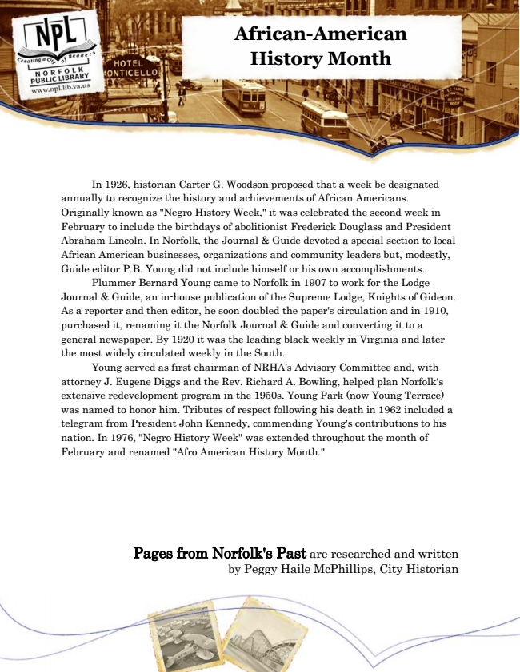

African-American History Month
In 1926, historian Carter G. Woodson proposed that a week be designated annually to recognize the history and achievements of African Americans. Originally known as "Negro History Week," it was celebrated the second week in February to include the birthdays of abolitionist Frederick Douglass and President Abraham Lincoln. In Norfolk, the Journal & Guide devoted a special section to local African American businesses, organizations and community leaders but, modestly, Guide editor P.B. Young did not include himself or his own accomplishments.
Plummer Bernard Young came to Norfolk in 1907 to work for the Lodge Journal & Guide, an in-house publication of the Supreme Lodge, Knights of Gideon. As a reporter and then editor, he soon doubled the paper's circulation and in 1910, purchased it, renaming it the Norfolk Journal & Guide and converting it to a general newspaper. By 1920 it was the leading black weekly in Virginia and later the most widely circulated weekly in the South.
Young served as first chairman of NRHA's Advisory Committee and, with attorney J. Eugene Diggs and the Rev. Richard A. Bowling, helped plan Norfolk's extensive redevelopment program in the 1950s. Young Park (now Young Terrace) was named to honor him. Tributes of respect following his death in 1962 included a telegram from President John Kennedy, commending Young's contributions to his nation. In 1976, "Negro History Week" was extended throughout the month of February and renamed "Afro American History Month."
Pages from Norfolk's Past are researched and written by Peggy Haile McPhillips, City Historian